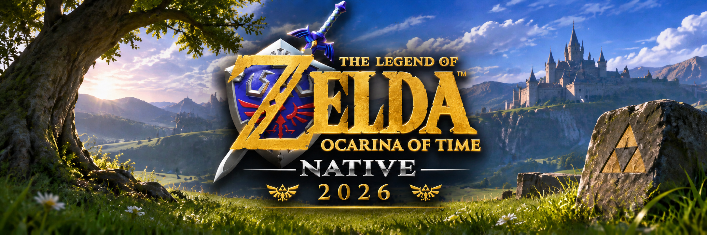
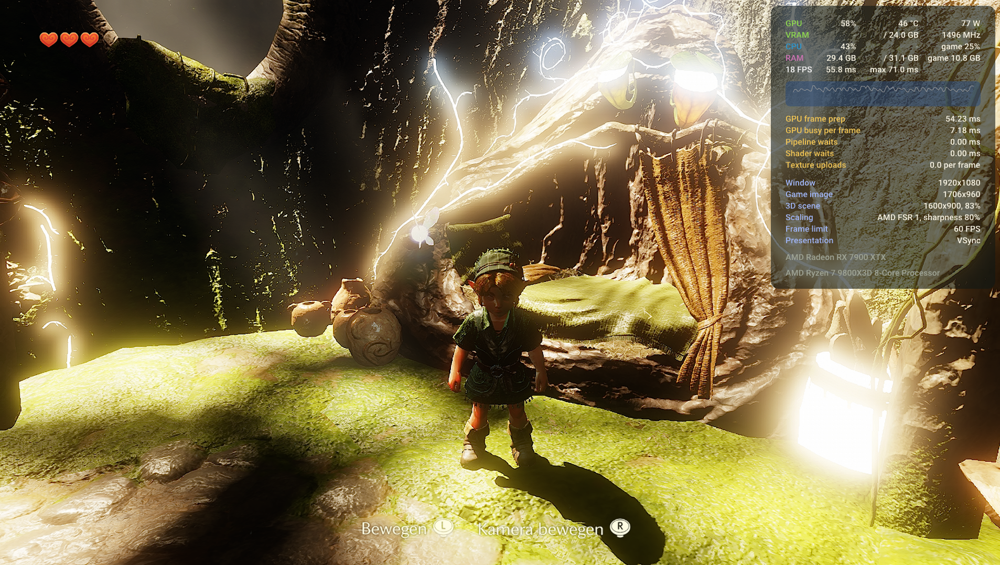

Fix the graphics.
Correct lighting and colour output, eliminate flickering, and fix the shader and rendering errors affecting the in-game scene.

Experimental · In development
I’m working on a native Windows x64 recompilation of the Switch 2 version. This is where I document progress, unresolved issues, and the milestones ahead.
In the tested menu/options path.
Latest recorded shader error reports.
Reported in the latest local test results.
Latest recorded results · documented commit e6125e6, tested on an AMD Radeon RX 7900 XTX. The zero Vulkan error count applies to menus/options; shader report counts do not necessarily identify distinct shaders or root causes.
The build has progressed beyond menus into a 3D in-game scene, including the Deku Tree and dialogue. Basic movement appears possible, but the rendering problems need attention before gameplay can be properly assessed.
Current focus: overexposure, flickering and other graphical errors. Work now focuses on lighting, colour output, and the shader and rendering errors affecting the scene. These issues are not fixed yet.
Still an experimental development build. Reliable gameplay, longer-run stability and saving/loading need verification. The previously reported longer-run CPU crash has not been confirmed resolved.
Native runtime linking, all 58 PACGA cases, AV1 decoding and the tested menu navigation are in place. Read the full development update for the technical details.

Correct lighting and colour output, eliminate flickering, and fix the shader and rendering errors affecting the in-game scene.
Verify movement, camera behavior and interactions once the scene is readable. Recheck the previously reported longer-run CPU crash.
Check scene transitions, audio, saving and loading, then longer sessions and additional hardware.
Earlier startup/menu recording from November 5, 2026. This video does not show the new 3D milestone described in Update #01. Open video directly · MP4, 14.7 MB
The build reaches a 3D in-game scene, and basic movement appears possible. Overexposure, flickering and other rendering errors are the current focus. Latest recorded results: 111 shader error reports and 0 Vulkan errors in the tested menu/options path. Reliable gameplay, longer-run stability and saving/loading still need verification.
Corrected the sRGB write view. Reduced Vulkan errors from 2 to 0 in the tested path, and shader error messages from 464 to 203. Tested the options menu and return path; 3,000 Vulkan presentations and normal shutdown.
Addressed 58 PACGA sites, added AV1 decoding, and fixed two stability issues. That earlier run reached 600 counted frames but still displayed a black screen.
Commit identifiers come from local status reports. This website does not automatically include the associated code history. Earlier frame counts and later presentation counts are different measurements.
I’m developing this project independently. Voluntary support helps cover development tools, testing, and the ongoing work of investigating bugs and documenting progress.
Support is optional and does not purchase a game, early access, or a guaranteed release. Following the project and sharing useful feedback also help.
Thank you for supporting independent development.